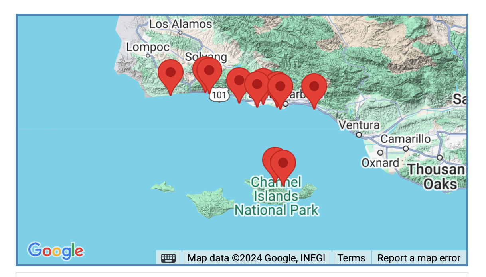
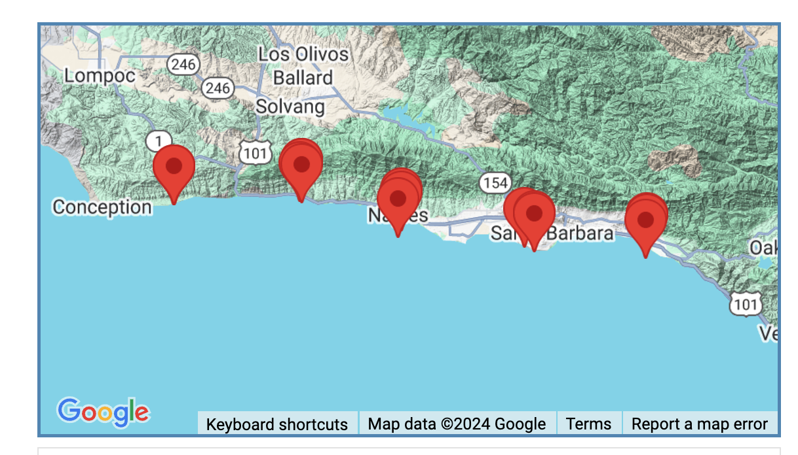
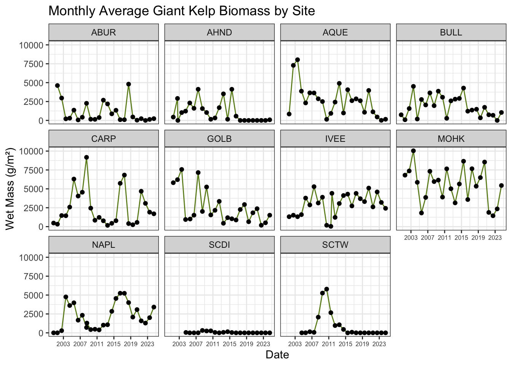
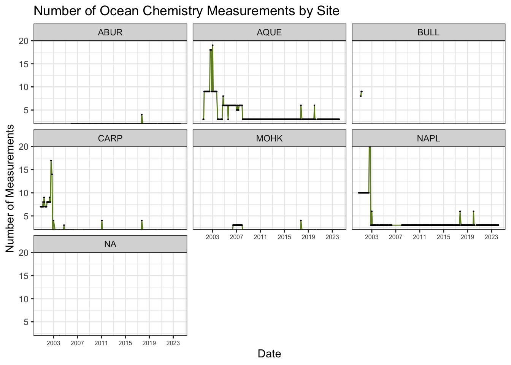
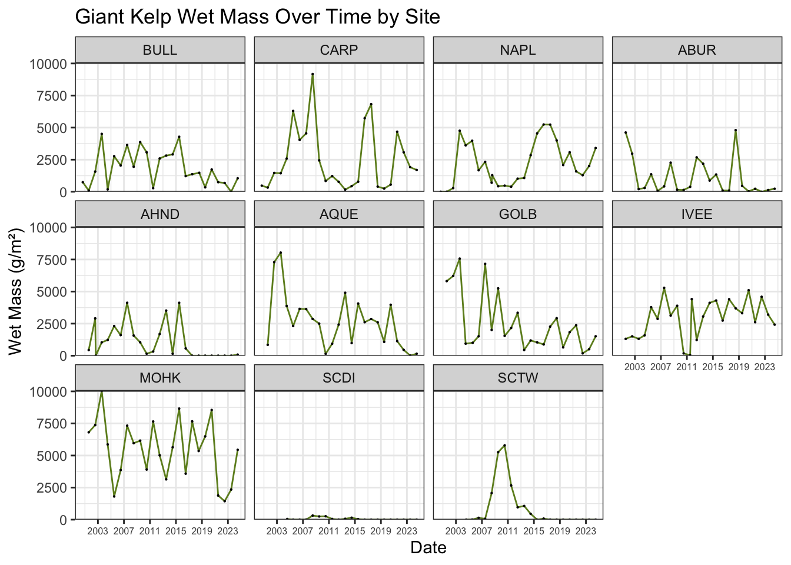
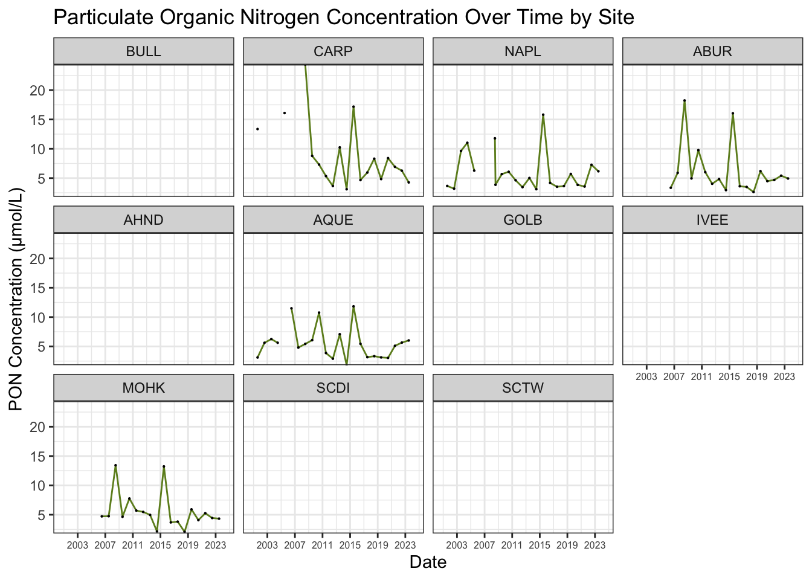
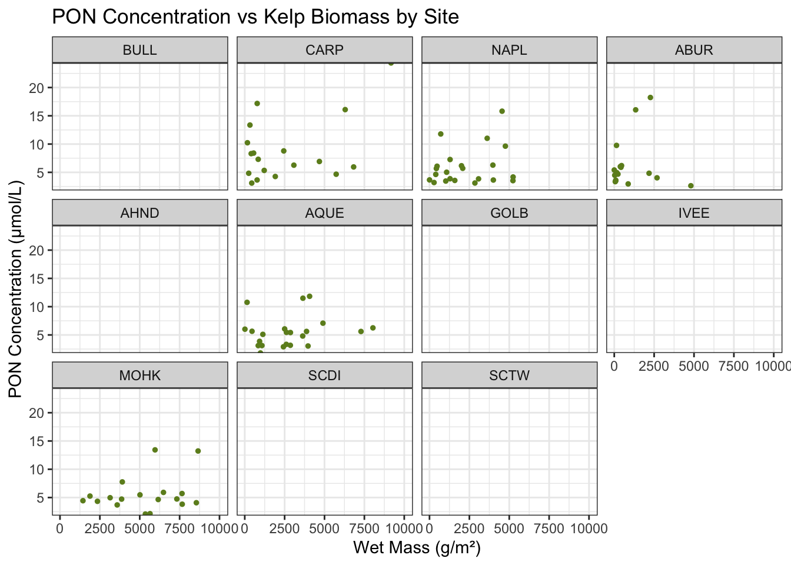
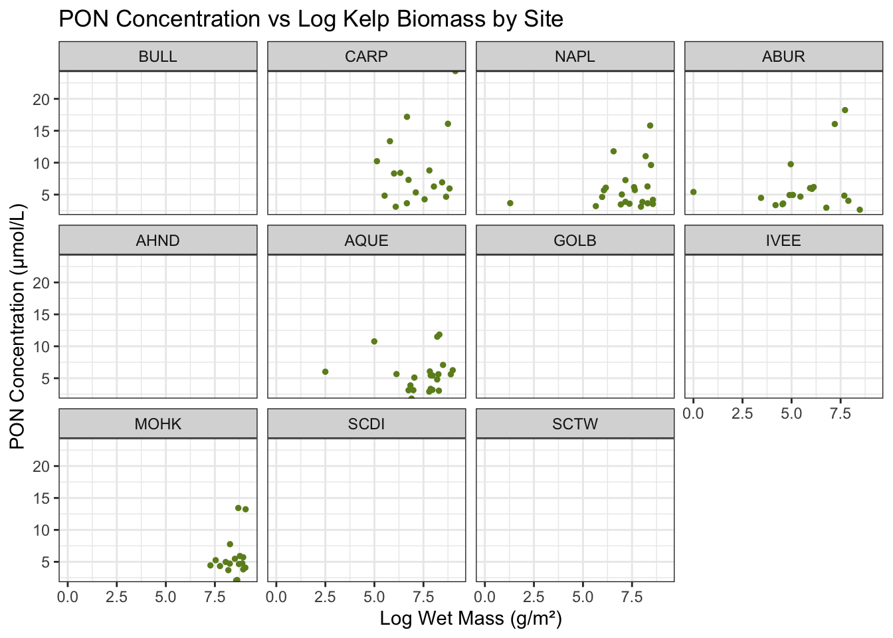
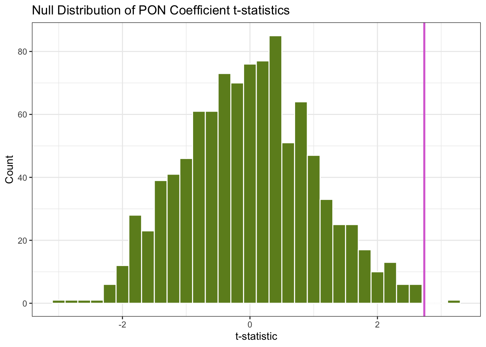

Code
library(tidyverse)
library(here)
library(readtext)
library(janitor)
theme_set(theme_bw())
set.seed(42)Leilanie Rubinstein
December 24, 2024
Santa Barbara’s coastal waters host some of the most productive marine ecosystems on earth, Macrocystis pyrifera, or giant kelp forests. Kelp are a keystone species, and provide food, shelter and protection for all kinds of marine life, including commercially valuable fisheries. According to NOAA, factors influencing kelp forest growth include nutrients, light levels, temperatures, and ocean currents. Research by Smith et. al newly found that kelp use urea, in addition to ammonium, nitrate, dissolved organic nitrogen as nutrients for growth.
In this analysis, I would like to examine the relationship between ocean chemistry and kelp forest biomass, and develop a model for nutrient growth factors on biomass.
This exercise was produced as a part of the UCSB MEDS Program for EDS 222: Statistics for Environmental Data Science, taught by Dr. Max Czapanskiy.
1. SBC LTER: Reef: Annual time series of biomass for kelp forest species, ongoing since 2000

2. SBC LTER: Ocean: Ocean Currents and Biogeochemistry: Nearshore water profiles (monthly CTD and chemistry), ongoing since 2000

# Read in kelp and ocean chemistry data
species <- read_csv(here::here(
"posts/2024-12-12-ocean-chem-kelp/data/Annual_All_Species_Biomass_at_transect_20240823.csv"), na = "-99999") %>%
janitor::clean_names()
ocean_chem <- read.table(here::here("posts/2024-12-12-ocean-chem-kelp/data/LTER_monthly_bottledata_20240821.txt"),
header = TRUE, sep = ";", na = c("BDL", "99999")) %>% # `BDL` = below detection level
janitor::clean_names()
# Filter to Giant kelp (Macrocystis pyrifera)
kelp <- species %>%
filter(scientific_name == "Macrocystis pyrifera")The variables I plan to use for ocean chemistry are (in units of micromoles per liter):
no2_no3_umol_l = concentration of the sum of nitrate and nitritepon_umol_l = concentration of particulate organic nitrogentdn_umol_l= concentration of dissolved nitrogenammonia_umol_l= concentration of ammoniumurea_umol_l= concentration of ureaThe variables I plan to use for kelp biomass are:
wm_gm2 = areal wet mass of individuals or colony in grams per square meterdensity = density taxon per squared meter in number per square meterNote: there are other measures of biomass in ocean_chem. However, they are just linear transformations of wet mass.
# Summarize kelp data to monthly averages
monthly_kelp_data <- kelp %>%
group_by(year, month, site) %>%
summarise(across(where(is.numeric), mean, na.rm = TRUE)) %>%
mutate(date = as.Date(paste(year, month, "01", sep="-")))
# Summarize ocean chem data to monthly averages
monthly_ocean_data <- ocean_chem %>%
mutate(date = as.Date(yyyy_mm_dd),
year = lubridate::year(yyyy_mm_dd),
month = lubridate::month(yyyy_mm_dd)) %>%
mutate(site = case_when(
station %in% c("QI", "QM", "QO", "QR") ~ "AQUE", # match site names at both datasets
station %in% c("CI", "CO", "CR") ~ "CARP",
station %in% c("MI", "MK") ~ "MOHK",
station %in% c("NI", "NO", "NR") ~ "NAPL",
station %in% c("BI", "BO", "BR") ~ "BULL",
station %in% c("AB") ~ "ABUR"
)) %>%
group_by(year, month, site) %>%
summarise(
across(where(is.numeric), mean),
n = dplyr::n()) %>%
mutate(date = as.Date(paste(year, month, "01", sep="-")))
# Plot monthly average weight data
ggplot(monthly_kelp_data, aes(date, wm_gm2)) +
geom_line(color = "#6d8c23") +
geom_point() +
facet_wrap(~site) +
scale_x_date(date_breaks = "4 years",
date_labels = "%Y") +
labs(title = "Monthly Average Giant Kelp Biomass by Site",
x = "Date",
y = "Wet Mass (g/m²)") +
theme(axis.text.x = element_text(size = 6), angle = 45, hjust = 1)
# Check which sites have monthly ocean chemistry data
ggplot(monthly_ocean_data, aes(date, n)) +
geom_line(color = "#6d8c23") +
geom_point(size = 0.1) +
facet_wrap(~site) +
scale_x_date(date_breaks = "4 years",
date_labels = "%Y") +
scale_y_continuous(expand = expansion(c(0, 0))) +
labs(title = "Number of Ocean Chemistry Measurements by Site",
x = "Date",
y = "Number of Measurements") +
theme(axis.text.x = element_text(size = 6), angle = 45, hjust = 1)
Note that there is a significant amount of missing data.
After grouping and summarizing the data, we are left with very few data points. There are NO instances that account for all of the ocean chemistry and kelp biomass variables initially identified for analysis.
Looking at the joined data, the column with the most complete data from the original variables seems to be pon_umol_l.
# Plot wet weight as a function of time
ggplot(joined_data, aes(date, wm_gm2)) +
geom_line(color = "#6d8c23") +
geom_point(size = 0.1) +
facet_wrap(~site) +
scale_x_date(date_breaks = "4 years",
date_labels = "%Y") +
scale_y_continuous(expand = expansion(c(0, 0))) +
labs(title = "Giant Kelp Wet Mass Over Time by Site",
x = "Date",
y = "Wet Mass (g/m²)") +
theme(axis.text.x = element_text(size = 6), angle = 45, hjust = 1)
# Plot particulate organic nitrogen concentration as a function of time
ggplot(joined_data, aes(date, pon_umol_l)) +
geom_line(color = "#6d8c23") +
geom_point(size = 0.1) +
facet_wrap(~site) +
scale_x_date(date_breaks = "4 years",
date_labels = "%Y") +
scale_y_continuous(expand = expansion(c(0, 0))) +
labs(title = "Particulate Organic Nitrogen Concentration Over Time by Site",
x = "Date",
y = "PON Concentration (μmol/L)") +
theme(axis.text.x = element_text(size = 6), angle = 45, hjust = 1)
# Plot particulate organic nitrogen as a function of wet mass
ggplot(joined_data, aes(wm_gm2, pon_umol_l)) +
geom_point(size = 1,
color = "#6d8c23") +
facet_wrap(~site) +
scale_y_continuous(expand = expansion(c(0, 0))) +
labs(title = "PON Concentration vs Kelp Biomass by Site",
x = "Wet Mass (g/m²)",
y = "PON Concentration (μmol/L)")
# Plot particulate organic nitrogen as a function of log wet mass
ggplot(joined_data, aes(wm_gm2_log, pon_umol_l)) +
geom_point(size = 1,
color = "#6d8c23") +
facet_wrap(~site) +
scale_y_continuous(expand = expansion(c(0, 0))) +
labs(title = "PON Concentration vs Log Kelp Biomass by Site",
x = "Log Wet Mass (g/m²)",
y = "PON Concentration (μmol/L)")
Is there a relationship between biomass and particulate organic nitrogen (PON) concentration?
Call:
lm(formula = wm_gm2 ~ pon_umol_l + site, data = joined_data)
Residuals:
Min 1Q Median 3Q Max
-3648.9 -1378.2 -418.3 1079.4 5162.0
Coefficients:
Estimate Std. Error t value Pr(>|t|)
(Intercept) 1246.88 673.76 1.851 0.06743 .
pon_umol_l 147.54 53.95 2.735 0.00749 **
siteNAPL 143.32 660.54 0.217 0.82870
siteABUR -1252.58 688.31 -1.820 0.07204 .
siteAQUE 704.76 666.46 1.057 0.29307
siteMOHK 3186.67 695.94 4.579 1.46e-05 ***
---
Signif. codes: 0 '***' 0.001 '**' 0.01 '*' 0.05 '.' 0.1 ' ' 1
Residual standard error: 2020 on 92 degrees of freedom
(166 observations deleted due to missingness)
Multiple R-squared: 0.3592, Adjusted R-squared: 0.3243
F-statistic: 10.31 on 5 and 92 DF, p-value: 7.175e-08
Call:
lm(formula = wm_gm2_log ~ pon_umol_l + site, data = joined_data)
Residuals:
Min 1Q Median 3Q Max
-5.7046 -0.6219 0.3389 0.8050 3.1095
Coefficients:
Estimate Std. Error t value Pr(>|t|)
(Intercept) 6.57754 0.48030 13.695 < 2e-16 ***
pon_umol_l 0.06801 0.03846 1.768 0.08032 .
siteNAPL 0.16902 0.47088 0.359 0.72046
siteABUR -1.38850 0.49067 -2.830 0.00572 **
siteAQUE 0.45671 0.47509 0.961 0.33892
siteMOHK 1.49788 0.49611 3.019 0.00328 **
---
Signif. codes: 0 '***' 0.001 '**' 0.01 '*' 0.05 '.' 0.1 ' ' 1
Residual standard error: 1.44 on 92 degrees of freedom
(166 observations deleted due to missingness)
Multiple R-squared: 0.2987, Adjusted R-squared: 0.2605
F-statistic: 7.836 on 5 and 92 DF, p-value: 3.512e-06
Call:
lm(formula = density ~ pon_umol_l + site, data = joined_data)
Residuals:
Min 1Q Median 3Q Max
-6.7742 -2.6087 -0.6179 1.8569 10.1785
Coefficients:
Estimate Std. Error t value Pr(>|t|)
(Intercept) 1.7383 1.2152 1.430 0.15598
pon_umol_l 0.3174 0.0973 3.261 0.00156 **
siteNAPL 0.6812 1.1914 0.572 0.56885
siteABUR -1.8348 1.2414 -1.478 0.14285
siteAQUE 1.4354 1.2020 1.194 0.23551
siteMOHK 7.8533 1.2552 6.256 1.23e-08 ***
---
Signif. codes: 0 '***' 0.001 '**' 0.01 '*' 0.05 '.' 0.1 ' ' 1
Residual standard error: 3.644 on 92 degrees of freedom
(166 observations deleted due to missingness)
Multiple R-squared: 0.4621, Adjusted R-squared: 0.4328
F-statistic: 15.81 on 5 and 92 DF, p-value: 3.266e-111. Biomass Model model_wm
There is a significant positive relationship between PON and kelp biomass (p = 0.00749). For every one μmol/L increase in PON concentration, kelp wet mass increases by 147.54 grams/square meter when the reference site is BULL. Consistent with the “Monthly Average Giant Kelp Biomass by Site” plot, the MOHK site has significantly higher biomass than the other sites (coef = 3187.67, p = 1.46e-5). The model explains about 32.4% of the variation in biomass (not great).
2. Log Biomass Model model_wm_log
There is a marginally significant positive relationship between PON and log-transformed kelp biomass (p = 0.080). For every one μmol/L increase in PON concentration, log kelp wet mass increases by 0.068 units when the reference site is BULL. The ABUR site shows significantly lower biomass (coef = -1.389, p = 0.006) while MOHK shows significantly higher biomass (coef = 1.498, p = 0.003) compared to other sites. The model explains about 26.1% of the variation in log biomass (poor fit).
3. Biomass Density Model model_wm_density
There is a significant positive relationship between PON and kelp density (p = 0.002). For every one μmol/L increase in PON concentration, kelp density increases by 0.317 individuals per square meter when the reference site is BULL. Similar to the biomass models, the MOHK site shows significantly higher density than other sites (coef = 7.853, p < 0.001). This model has the best fit of the three, explaining about 43.3% of the variation in density, but still is not great.
Hypotheses:
# Get observed coefficient for pon_umol_l
observed_coef <- coef(summary(model_wm))["pon_umol_l", "t value"]
# Create randomizations
null_dist <- replicate(1000, {
rand_joined_data <- joined_data %>%
ungroup() %>%
mutate(pon_umol_l = sample(pon_umol_l))
rand_model <- lm(wm_gm2 ~ pon_umol_l + site, data = rand_joined_data)
coef(summary(rand_model))["pon_umol_l", "t value"]
})
# Calculate p-value (two-sided test)
p_value <- mean(abs(null_dist) >= abs(observed_coef))
# Plot the null distribution
null_dist_df <- data.frame(t_stat = null_dist)
ggplot(null_dist_df, aes(x = t_stat)) +
geom_histogram(binwidth = 0.2,
fill = "#6d8c23",
color = "white") +
geom_vline(xintercept = observed_coef, color = "orchid", linewidth = 1) +
labs(title = "Null Distribution of PON Coefficient t-statistics",
x = "t-statistic",
y = "Count")
Randomization test p-value: 0.003 Observed t-statistic: 2.734869 This randomization test shuffled the data n = 1000 times to determine what the point estimate (t-statistic) would be if it occurred by chance. 0nly 0.3% of the time would a value of t = 2.37 be produced as chance. At a threshold of alpha = 0.05, we can reject our null hypothesis and state that PON has a positive effect on kelp wet mass.
The observed t-statistic is 2.73, which means that the estimated coefficient is 2.73 standard errors away from zero. In the figure, the null distribution shows us what we would expect if there was no relationship between PON and biomass (measured by density). The purple line falls outside of the majority of the distribution, which tells us that there is a strong relationship between PON and density.
Due to incomplete data, I could not perform my intended analysis. The ocean chemistry and kelp data were inconsistently collected across sites and months, leaving very few usable data points after cleaning.
The model likely suffers from omitted variable bias. While prior research has established that temperature, currents, and light levels affect kelp growth, my model only included PON and site as variables, excluding other nutrients and physical variables.
Autocorrelation may have affected the results because samples were taken at monthly intervals, and ecological conditions typically carry over from one month to the next. This violation of independence could lead to underestimated standard errors and overstated significance in the statistical results. However, techniques to reduce autocorrelation, such as a temporal lag model, were not feasible given the substantial missing data, which included gaps of several months in the joined dataset.
Overall, the results of my models should not be considered reliable due to the significant data gaps. I had overestimated the completeness of the LTER data for this research question.
For future research, I would like to analyze Thomas Fire effects on kelp growth using a more complete ocean chemistry dataset. Researchers at UCSB discovered that wildfire ash from the 2017 Thomas Fire resulted in significant additions of dissolved nutrients, including inorganic and organic nitrogen, silicic acid, metals, and organic carbon. Furthermore, this ash leachate resulted in an increase of relative abundance of eukaryotic phytoplankton. Since the impacts of wildfire products on Macrocystis pyrifera remain understudied, this could be a valuable area for investigation. Additional factors to consider would include kelp recruitment rates using a temporal lag model and dissolved metal concentrations.
| Data | Citation | Link |
|---|---|---|
| SBC LTER: Ocean: Ocean Currents and Biogeochemistry: Nearshore water profiles (monthly CTD and chemistry), ongoing since 2000 | Washburn, L., M. Brzezinski, C. Carlson, and D. Siegel. 2024. SBC LTER: Ocean: Ocean Currents and Biogeochemistry: Nearshore water profiles (monthly CTD and chemistry), ongoing since 2000 ver 31. Environmental Data Initiative. https://doi.org/10.6073/pasta/cc75e947e0137e1594ebd8ce4b4a8880 (Accessed 2024-12-09). | https://portal.edirepository.org/nis/mapbrowse?packageid=knb-lter-sbc.10.31 |
| SBC LTER: Reef: Annual time series of biomass for kelp forest species, ongoing since 2000 | Reed, D. and R. Miller. 2024. SBC LTER: Reef: Annual time series of biomass for kelp forest species, ongoing since 2000 ver 17. Environmental Data Initiative. https://doi.org/10.6073/pasta/6587ad06e299e566e2092d1268dc206b (Accessed 2024-12-10). | https://portal.edirepository.org/nis/mapbrowse?packageid=knb-lter-sbc.50.17 |